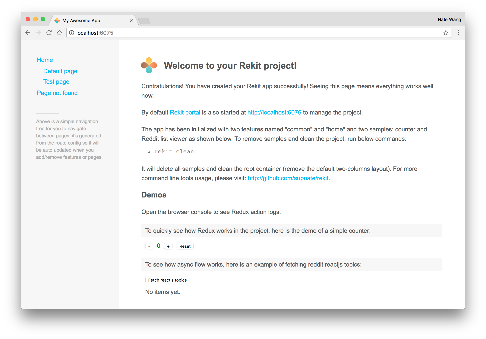
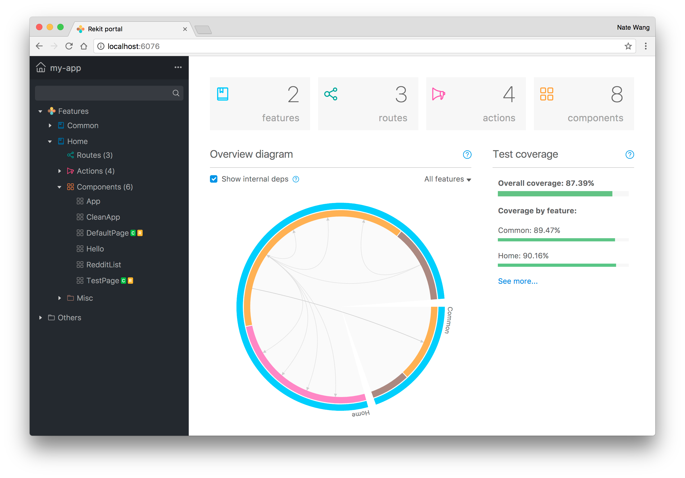
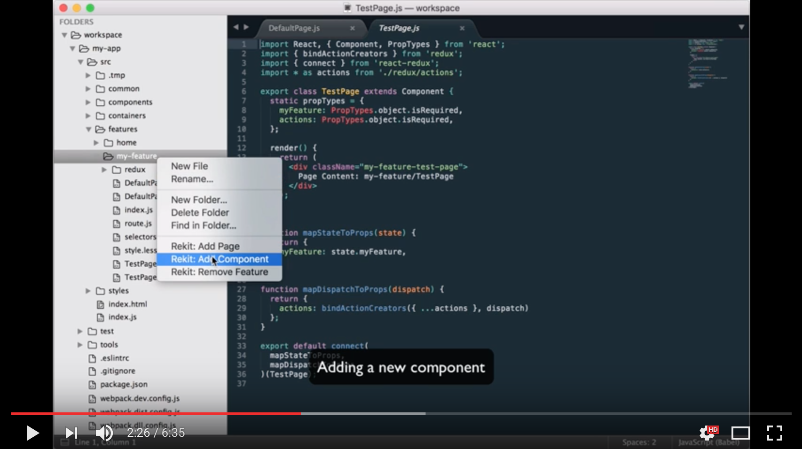

Get started
The easiest way to try out Rekit is creating a Rekit app and playing with it. Just 3 steps:
1. Install Rekit
$ npm install -g rekit
2. Create an app
$ rekit create my-app
$ cd my-app
$ npm install
3. Start it!
$ npm start
See the welcome page
The app should be started in a few seconds, then you can access it at: http://localhost:6075.
If everything is ok, you should be able to see the welcome page:

The welcome page consists of 3 parts:
1. A simple nav component It reads the route config of the whole application and generates links to different pages.
2. A counter demo using sync actions. By the sample you can quickly see how component, actions and reducers work together.
3. A demo to fetch latest topics of reactjs channel from Reddit
This is just the same example from the official Redux site: https://redux.js.org/docs/advanced/ExampleRedditAPI.html. It demostrates the async actions for a Redux application. But the Rekit version uses one action one file pattern, and it adds error handling which is a common requirement for real-world apps.
Try Rekit Portal
Rekit portal is a new dev tool shipped with Rekit 2.0. When a Rekit app is started, the Rekit portal is also auto started at: http://localhost:6076 by default:

It not only provides web UIs for creating/renaming/moving/deleting elements of a Rekit app, but also provides tools for analyzing/building/testing a Rekit application.
From the dashboard, you find test coverage report have not been generated. Don't hesitate to click the run tests button and get a quick view about how Rekit portal helps to do such tasks in a super easy way!
You can learn more from the Rekit portal page.
Where to start
Rekit creates a single page application by default. You may need to edit the root container first to define your own container layout. The source file is at src/features/home/App.js.
Two quick tutorial videos
There are two samples on the welcome page, and they are also demos on Redux's official web site. Now let's see how to create them with Rekit.

That's it!
You have already created your very first Rekit app and tried powerful Rekit tools! Now you can read more details about Rekit in the following pages.